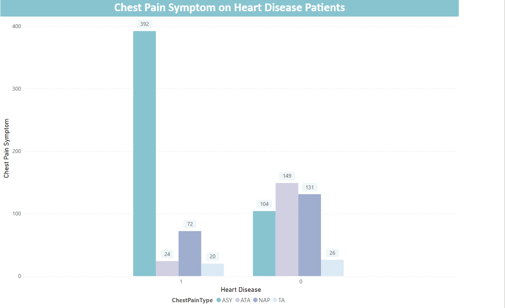
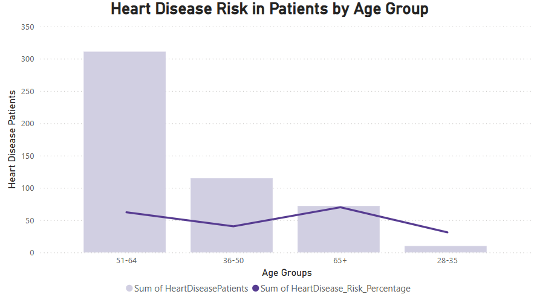

SELECT
HeartDisease,
AVG(Cholesterol) AS AvgCholesterol
FROM heart_failure_staging
GROUP BY HeartDisease;

In this project, I analyzed heart disease risk factors using a structured dataset containing patient demographics, medical history, and clinical measurements. The data was stored in MySQL, and I utilized SQL queries to extract, clean, and transform key variables related to heart disease, including cholesterol levels, blood pressure, ECG results, and exercise-induced angina. Tools & Technologies used: MySQL, Power BI, SQL, DAX
SELECT *
FROM heart_failure_staging
WHERE HeartDisease = 1;
SELECT
HeartDisease,
AVG(Cholesterol) AS AvgCholesterol
FROM heart_failure_staging
GROUP BY HeartDisease;
SELECT
ChestPainType,
COUNT(CASE WHEN HeartDisease = 1 THEN 1 End) AS HeartDiseaseSymptom
FROM heart_failure_staging
GROUP BY ChestPainType
ORDER BY HeartDiseaseSymptom DESC;

SELECT
CASE
WHEN age BETWEEN 28 AND 35 THEN '28-35'
WHEN age BETWEEN 36 AND 50 THEN '36-50'
WHEN age BETWEEN 51 AND 64 THEN '51-64'
WHEN age > 64 THEN '65+'
END AS age_groups,
COUNT(*) AS TotalPatients,
COUNT(CASE WHEN HeartDisease = 1 THEN 1 END) AS HeartDiseasePatients,
ROUND(100.0 * COUNT(CASE WHEN HeartDisease = 1 THEN 1 END) / COUNT(*), 2) AS HeartDisease_Risk_Percentage,
ROUND(AVG(FastingBS), 2) AS AvgFastingBS,
ROUND(AVG(RestingBP), 2) AS AvgRestingBP,
ROUND(AVG(MaxHR), 2) AS AvgMaxHR
FROM heart_failure_staging
GROUP BY age_groups
ORDER BY age_groups;

select
case
when restingBP BETWEEN 0 and 95 then '80-95'
when restingBP BETWEEN 96 and 110 then '96-110'
when restingBP BETWEEN 111 and 130 then '111-130'
when restingBP BETWEEN 131 and 150 then '131-150'
when restingBP > 150 then '150+'
end as restingBP_ranges,
count(*) as totalHeartDiseasePatients
from heart_failure_staging
where HeartDisease = 1
group by RestingBP_ranges
order by totalHeartDiseasePatients asc;

SELECT *
FROM (
SELECT
Age,
Cholesterol,
RANK() OVER (
PARTITION BY
CASE
WHEN Age BETWEEN 28 AND 35 THEN '28-35'
WHEN Age BETWEEN 36 AND 50 THEN '36-50'
WHEN Age BETWEEN 51 AND 64 THEN '51-64'
ELSE '65+'
END
ORDER BY Cholesterol DESC
) AS Cholesterol_Rank
FROM heart_failure_staging
) ranked
WHERE Cholesterol_Rank <= 5;

WITH HighRiskPatients AS (
SELECT
HeartDisease,
CASE WHEN Cholesterol > 200 THEN 1 ELSE 0 END AS HighCholesterol,
CASE WHEN RestingBP > 130 THEN 1 ELSE 0 END AS HighBloodPressure,
CASE WHEN ExerciseAngina = 'Y' THEN 1 ELSE 0 END AS ExerciseAngina,
CASE WHEN FastingBS = 1 THEN 1 ELSE 0 END AS HighBloodSugar,
CASE WHEN ST_Slope IN ('Flat', 'Down') THEN 1 ELSE 0 END AS AbnormalSTSlope
FROM heart_failure_staging
WHERE HeartDisease = 1
)
SELECT
'High Cholesterol' AS RiskFactor,
COUNT(*) AS Frequency
FROM HighRiskPatients
WHERE HighCholesterol = 1
UNION ALL
SELECT
'High Blood Pressure' AS RiskFactor,
COUNT(*) AS Frequency
FROM HighRiskPatients
WHERE HighBloodPressure = 1
UNION ALL
SELECT
'Exercise Angina' AS RiskFactor,
COUNT(*) AS Frequency
FROM HighRiskPatients
WHERE ExerciseAngina = 1
UNION ALL
SELECT
'High Blood Sugar' AS RiskFactor,
COUNT(*) AS Frequency
FROM HighRiskPatients
WHERE HighBloodSugar = 1
UNION ALL
SELECT
'Abnormal ST Slope' AS RiskFactor,
COUNT(*) AS Frequency
FROM HighRiskPatients
WHERE AbnormalSTSlope = 1
ORDER BY Frequency DESC
LIMIT 5;